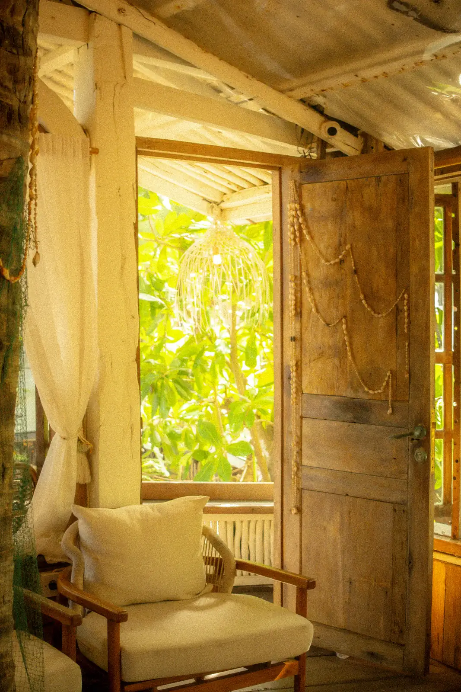

04.1
Projetamos e executamos reformas no litoral potiguar há 12 anos. Pouca obra por vez, acompanhada de perto, com material que aguenta maresia.

186 obras · 94% no prazo · desde 2014
A gente acredita que uma boa reforma é aquela que você esquece que fez. A porta não empena, o reboco não descasca, a conta de luz não assusta. Por isso pegamos no máximo seis obras por vez, e o mesmo arquiteto que desenha é o que visita o canteiro.
— Helena, numa reunião de 2016, e desde então é regra.
* Medida em 40 obras, comparando 12 meses de conta de luz antes e depois da reforma.
Se não está na lista, provavelmente indicamos alguém melhor.
Cada obra tem a sua folha, com ficha técnica, antes e depois e o que deu trabalho.
A etapa 3 é a que todo mundo quer pular. É a que mais economiza dinheiro.
Foi a primeira obra da minha vida em que eu dormi tranquila. O diário de sexta virou meu momento favorito da semana.
Fecharam o café às 22h e abriram às 6h por 41 noites. Não perdemos um dia de faturamento.
O orçamento fechado foi o orçamento final. Diferença de R$ 1.200 em uma obra de R$ 310 mil.
Pagamos 38% menos de energia no primeiro verão. O retrofit se paga em quatro anos.
Eles disseram não para duas ideias minhas. Ainda bem.
Parceiros e imprensa
A primeira visita não custa nada. Você mostra a casa, a gente faz as perguntas chatas e sai de lá dizendo se a obra faz sentido.
Marcar uma visita Ou chamar no WhatsApp, (84) 99188-0412